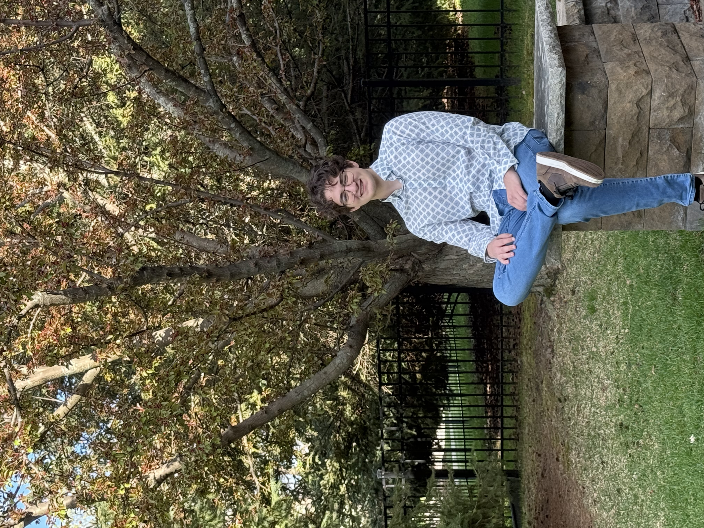

Barca Koseoglu

High School Senior • UIUC Statistics & Computer Science
I am a 17-year-old high school senior with a deep passion for computer science, artificial intelligence, and data science. My academic journey has been driven by curiosity and a desire to solve complex problems at the intersection of technology and mathematics.
Currently, I am a dual enrollment student at the University of Minnesota Twin Cities, where I have maintained a 4.0 GPA while completing advanced coursework in Data Structures & Algorithms, Computer Systems, Linear Algebra, and Software Development. I am also starting my B.S. in Cybersecurity in Fall 2026 at Metropolitan State University, with a 4.0 dual enrollment GPA.
My research experience at the University of Minnesota with a mathematics professor involved engineering a novel hybrid scalar multiplication algorithm for Elliptic Curve Cryptography that outperformed traditional methods by 56%. This work has been submitted to a peer-reviewed undergraduate mathematics journal.
In addition to my academic pursuits, I am CompTIA Security+ certified and actively involved in my community as a private STEM tutor and the founder of a local Python coding club.
This fall, I will be attending the University of Illinois Urbana-Champaign to pursue a B.S. in Statistics & Computer Science.